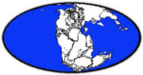
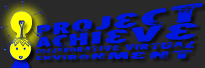
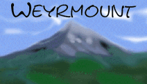

Rachel's Super MOO List: P-Z
Go to the start of the list
MOOs are listed as educational, ESL, research, RPG, sci-fi, social, or other.
Please e-mail me with additions, corrections, comments, and suggestions.
updated Thursday, 19 June 2003
A | B | C | D | E | F | G | H | I | J | K | L | M | N | O | P | Q | R | S | T | U | V | W | X | Y | Z
MOO Listings A-C ||| MOO Listings D-G ||| MOO Listings H-O
Educational MOOs ||| Foreign Language (ESL) MOOs
Miscellaneous MOOs ||| RPG MOOs ||| Social MOOsPangaea
11 October 01
pangaeamoo.org 7777
confabulation.com 7777
documentation * further documentation * web access
ESL / social
[It "is dedicated to being a multi-lingual community, with many areas that are especially friendly to specific language speaking people." It is specifically designed for English, Español (Spanish), français (French), Deutsch (German), portugês (Portuguese), italiano (Italian), and Pinyin (Latinized Chinese). There is an on-MOO and off-MOO instant translator in use. It has TTS (text to speech) modifications to make "the MOOing experience more enjoyable for blind persons." The theme is internationalism based on fictional realignment of the earth's continents in the year 2052. Special areas are being developed to accommodate various ethnic groups witht he ambition to blend cultures. The goal is "Fun, Chatting, Learning, Programming, Gaming, and attempting to return to the original purpose of MOOS -- to experiment with 'community' and sense of presence." It opened 21 January 2000. En línea, el texto basó el mundo con el traductor libre de la traducción del lenguaje para los estudiantes, los profesores, y los utilizadores ocultos. Interacción en tiempo real.]Paradise MOO
kamber.cobra.net 8888
131.123.56.158 8888
social
[It is a tropical island. Your small ship brought you there onto their beautiful white sand beaches. They have a beautiful hotel where you can wait to talk to the Wizards, the island is covered in beautiful beaches, scuba diving, sunbathing men and women... What more could you ask for? If your answer is a unicorn, space shuttle, or anything to do with civilization, then you're probably in the wrong place. But if you want a condo on the sea shore, a small tropical jungle hut, or a place to spend hours doing nothing but sunbathing and talking to other sun lovers, then you have come to the right place. If you want to become a builder, talk to one of the Wizards and ask them to give you builder status. They will add your personal rooms to whatever area you would like to live near. Be sure to explore everywhere to make sure you'll be happy where you are. Please make sure that you follow the tropical island getaway theme and please don't put anything there that doesn't belong on a tropical island. Have fun and enjoy yourself!]Paradoxia
AandEgames.gameverse.org 9999
documentation
RPG
["This is the story of a plane of existance that has been lost to the Mana Lands, named Paradoxia by its inhabitants, now trapped together in a dangerous world of magic and nature..."]ParkMOO see Immaterial Park
PennMOO
23 March 00
ccat.sas.upenn.edu 7777
documentation
educational
["Based loosely on the geographies of the Penn campus and the city of Philadelphia, PennMOO provides a 'place' where faculty hold classes and office hours, students gather for group projects, and real-time events bring users from Penn and around the world together in cyberspace. PennMOO is also an evolving experiment, seeking to help redefine the traditional walls of the college classroom."]PlowMOO
waystation.com 7777
198.68.2.28 7777
social
[Does not have a theme as such, aside from a commitment to general weirdness, silliness, and all around wackiness. As long as you build something, and it isn't really annoying, or generally stupid, it's considered in theme.]PMC-2 (Postmodern Culture MOO - 2)
hero.village.virginia.edu 7777
128.143.200.59 7777
documentation
educational
[A virtual space designed to promote the exploration of postmodern theory and practice; a place for intellectual meandering. There, the unstable "real world" of postmodernity is mixed with the solid virtuality of MOOspace. Membership is restricted to those doing postmodernism research. It is a production of the Institute for Advanced Technology in the Humanities (IATH) at the University of Virginia in Charlottesville.]PoseidonMoo
pnt.arkay.net 8000
social
[It is an underwater themed moo, and is in the making. The archwizard is Goldfishy, his email addy is goldfishy@litmuse.cas.usf.edu. If you need to know more please contact him.]Project Achieve aka AchieveMOO
achieve.utoronto.ca 2222
documentation
educational
[It is a "Schoolnet Collaborative Virtual Learning Environment." It is a project-based collaborative learning environment for Canadian learners and their friends. It is funded by Canada's Schoolnet, and sponsored by the Knowledge Media Design Institute of the University of Toronto. Achieve features the VASE: Virtual Assignment Server Environment, and file upload/management utilities integrated with the Xpress GUI.]Pueblo
140.198.16.20 7777
Pueblo Moobie Manual
educational
[K-6 MOO based on educational learning and the virtual experience.]Puget Sound Community School Virtual Educational Environment (PSCS VEE)
moo.speakeasy.org 7777
documentation
educational
[MOO of the Puget Sound Community School.]pURL MOO -- see A Midsummer Night's Dream
Quest World Adventures
quest.cmoo.com 9999
199.224.73.136 9999
social
[There doesn't seem to be a theme. It is a CMOO MOO.]Raclya MOO
mushhaven.net 4000
documentation
RPG
[It is just starting up; the theme is about a divided world called Raclya, where the OldKingdom has divided into two seperate kingdoms due to many misunderstandings. Between theses two divided Kingdoms are the People and intelligent animals which can bond to these humans, share their thoughts, feelings, and beings with their bonded partner.]Res Rocket Surfer
rocket.resrocket.com 1111
documentation
other
[Join a world wide jam session, where you can groove with musicians from Oslo, San Francisco, and Notting Hill. Or if you're looking for comments on your freshly mixed MIDI files, upload them to your locker on the Res Rocket web site for other others to browse. Based out of a studio in Notting Hill, west London, Internet band Res Rocket Surfer developed this world and the associated web site. They invite musicians to hook up their MIDIs to jam in real time, using the Distributed Realtime Groove Network realtime jamming DRGN software. While the realtime jamming takes place on the web realtime chat takes place on their MOO. On the web, go to the control room to sample some tracks and add comments, or go the ResRocket Backstage Bar on the MOO to hang and chat.]River MOO
rivermoo.com 8888
documentation * request a character * web connection
social
[Theme wise, this world has only one constant force: the river. Its purpose is socializing and programming. Its primary function is to provide a medium for advancing the uses of HTML as a foundation for communication over the internet. It is home to 1,214 players and 7,253 objects. It is run by the Indiana University Honors Division.]The Real Life MOO (RLMOO)
rlmoo.woo.net 7777
199.237.128.49 7777
documentation
social
[Self described as, "This is not a toy. This is not a game. This is real life. There's no such thing as virtual reality. RLMOO is dedicated to the pursuit of linguistic research, literary creation, and social change. It's the text-based equivalent of a conference call. It is also a new medium for art, education, and communication. Morever, RLMOO is an experiment in anarchist politics." You must be twenty-one or older to connect.]RockMOO
atlas.pingnet.com 7777
social
[They need new programmers and players, as there aren't many now. So stop on by and help them.]ROO MOO
saga.umkc.edu 4444
documentation * web interface * Policy FAQ * Mission Statement * ROO MOO Command Help Guide
educational
[An interdisciplinary educational MOO sponsored by the Instructional Materials Laboratory (College of Arts & Sciences, University of Missouri, Kansas City). It provides a real-time virtual campus for faculty, students, & staff to develop creative and innovative environments and tools for teaching, learning, and research, and to foster interdisciplinary collaboration. It is modeled after the physical space of the campus. Faculty from other Higher Ed institutions are encouraged to join them and to bring students online to collaborate.]RSmoo
RSmoo.cmoo.com 6666
216.37.163.9 6666
social
[It is a social MOO for people who like to program. They are seeking good coders. It was created in July 1999.]Rumba MOO
calvin.univalle.edu.co 8888
200.25.53.30 8888
documentation (in Spanish)
ESL / social
[A Spanish social MOO for the Universidad del Valle - Cali, Colombia.]Rupert
rupert.twyst.org 9040
documentation
other
[Based on Douglas Adams' The Hitchhiker's Guide to the Galaxy.]RuthMOO
ruthmoo.feldberg.brandeis.edu 7777
staff.feldberg.brandeis.edu 7777
documentation
educational
[It "is an experimental site for the exploration of educational technology and virtual community." It is hosted by Brandeis University and has been open since January 1998.]Ryksyll MOO
moo.ryksyll.com 8888
documentation * further information * character request * map of the city
RPG
[The world is based on the works of Peter Wright on the land of Mycle. It is an adult-restricted game, though not necessarily adult oriented. TS is allowed in most semi-public areas. They are currently accepting more builders and more players so that anyone wanting to can come along and play. They offer mutliple guilds and temples to join, as well as several different species.]Science & Fiction MOO
moo.ufsm.br 7777
ESL
[Esse eh o ponto de partida da maioria dos players do nosso MOO. Sua grandiosidade e conforto propiciam enormes possibilidades para quem estah connect guest disposto a explorar nosso MOOndo. Nos seus extremos existem dois enormes portais, cujas pesadissimas portas de bronze exigem algum esforco para abri-las. Pode-se ler claramente os dizeres grafados em cada porta: Caminho da Ciencia e Caminho da Ficcao. Sim, aqui a Ciencia e a Ficcao sao levadas a serio...]schMOOze University
schmooze.hunter.cuny.edu 8888
146.95.128.7 8888
documentation
educational / ESL
[A small college known for its hospitality and the diversity of its student population. Established in July 1994 as a place where people studying English as a second or foreign language could practice English while sharing ideas and experiences with other learners and practicers of English. Students have opportunities for one-on-one and group conversations as well as access to language games, an on-line dictionary, USENET feed, and gopher access. Housed by Hunter College.]SchoolNet MOO -- see MOO Canada, Eh?
ScienceMOO
web access
educational
[The only MOO I've ever seen that doesn't offer telnet access, ScienceMOO is dedicated to science education. They hold online science competitions in the MOO, teacher workshops, classes for science educators, etc.]ScrabbleMOO -- see MarlDOoM
SCU MOO
scumoo.moo.mud.org 7776
angus.scu.edu.au 7776
documentation * JAVA access
educational / social
[It is a virtual version of Southern Cross University, located in Lismore NSW Australia with a sub-campus in Coffs Harbour NSW Australia. It has no set theme, however they encourage using the MOO for interactive programming, developing an Australian theme (much of what is there is based on the real life version), developing original ideas, as a forum to voice your opinions, and as a place to meet people from around the globe.]Shadowed Realities: The Genesis
saeihr.com 9876
RPG
[The battle of good end evil is taking place. There are several warring orgs. It was created by merging Space Conquest and Shadowed Realities.]ShadowRun MOO aka ShadowSpace
entropy.ensemblestudios.com 9990
208.193.239.21 9990
RPG
[It "is a combination of two popular RPG themes, cyberpunk and magic. The year is 2053. Magical traits long dormant and suppressed have become active in people and animals once again, causing them to mutate into their true forms. Creatures of myth and lengend once again walk the Earth. The USA has collapsed and reformed into several splinter nations, such as the United Canadian/American States (UCAS). Our setting is Seattle, a small piece of the UCAS deep inside a native American nation; The Salish-Shidhe." It is currently under construction, but you can request a character. It was formally know as ShadowMOO.]Sindome
sindome.cmoo.com 5555
documentation * timeline
RPG
[It has "a cyberpunk theme. Set in a domed Withmore City, known as the 'dome' to the world, in the year 2080 in a post-apocalyptic world."]Space Conquest -- see Shadowed Realities
Space Conquest II
whitestar.soark.net 6969
RPG
[It takes up where the original Space Conquest MOO left off. Due to a artifically created super blackhole, all human, Borth'a and Kzintiz races are forced to flee their worlds from the black destruction following them. These survivors manage to crash land on one of the last habitable worlds left in the destroyed galaxy. These three races have formed new unions to survive on this one world. Its a rpg world with intentions to develope space later.]Speakeasy -- see NullMOO
The Spinward Marches
spinward.org 8888
documentation
social
[It has a sci-fi milieu which you do not have to adhere to.]The Sprawl -- see ChibaMOO
Springside
iberia.vassar.edu 7777
educational
[The MOO at Vassar College. It was formerly VassarMOO.]Star Stones MOO
starstones.wolfpaw.net 9998
216.18.90.20 9998
RPG
[Based on the Dragonriders of Pern series by Anne McCaffrey. Set in the Telgar/Crom regions of Pern, it includes a different range of crafts as well as unique RP opportunities.]
StrangeBrew MOO
social
[A social moo with a twist. It has games, contests and events. It is currently down and being worked on, and should be back up soon.]Stormy Nights
stormynights.org 7777
bb5.betterbox.net 7777
mud.sector001.org 7777
documentation * mailing list * maps and further info * guide for newbies
RPG
["A modern/post-modern RPG where the rain never stops. Separate towns are provided with mass crime, luxury, and modern ammenities. Player vs. player combat is allowed." It was created in March 1999.]Syrinnia
syrinnia.o-r-g.org 7777
documentation * web login
RPG
[Formerly Gondolin Station, it is still in the coding phase if you'd like to help. It is not yet "open to play, however progress is going well. Guests or people wanting to help with development are welcome." It seeks to combine the best parts of Online Roleplaying, Risk, Tradable Card Games, and Microprose's Civilisation to creat a new type of RP/strategy game. The setting is an original, but not totally unfamiliar, fantasy world. Players are leaders in large scale factions - governments, religious orders or magical colleges. Each faction struggles against, or allies with, others to take control of the map. Empires can be built and destroyed, armies trained and sent to attack, the terrain of the world changed with magical spells. Syrinnia features a graphical web based interface for commanding armies and building cities, not unlike Civilisation, using the latest in DHTML advances. Roleplaying is required, and the game systems have been designed to encourage and reward it.]SyrinxMOO
syrinx.yeehaw.net 2112
social
[The theme is "The Temples of Syrinx", the fictional area as sung about in Rush's masterpiece "2112". In this musical work, the hero lives in a land of opression and grim reality. In this future society of the year 2112 AD, the leaders have taken away most of man's technology, art, etc. Our hero, while walking to the temples one day, unearths a great new wonder. He notes that it has "wires that vibrate, and give music...". This "strange device", or a guitar as it is known to us, caused him to review his opressive existence and seek to break the bonds that held him... a fitting topic in today's networked world. SyrinxMOO is a story about the rediscovery of society, technology, and ourselves... a quest to expand and discover beyond the chains and fetters of authority.]TecfaMOO
tecfamoo.unige.ch 7777
129.194.12.39 7777
documentation or documentation * TECFA overview
research / educational
[A Virtual Space for Educational Technology, Education and Research at TECFA (Technologies de Formation et Apprentissage), School of Psychology and Education (Faculte de Psychologie et des Sciences de l'Education), at the University of Geneva, Switzerland. Its main purposes are research (in educational technology and CMC) and some education.]The TechMOOseum
[The MOO has been offline for quite some time, however, it is expected to come back online in the future. The Tech Museum itself is going to be opening a major new facility in downtown San Jose in late 1998. The TechMOOseum was a text-based virtual reality created by staff, volunteers, and visitors of The Tech Museum of Innovation in San Jose, California.]TFN MOO
moo.tfn.net 6666
documentation * web tour * JAVA login
social / educational
[It is the virtual environment of Tallahassee Freenet (TFN), a Florida-based non-profit educational organization. You do not have to be a registered TFN user to participate. It has a near future sci-fi theme. "The moon and several planets have been settled." Coders are encouraged to get in on the ground floor, as it has not been announced to TFN users yet.]Titan Colony
bessie.englab.slcc.edu 8000
documentation * web access
sci-fi
[In 2599, a group of people launched from Luna Base and headed towards Titan, a moon of Saturn. Established on 2504, the Titan Colony was set up to study Saturn. Domes and transportation systems brought along from Earth were also set up. Realizing the potential of the moon, the Genisis II project was used on Titan to terraform its surface in 2510. Currently, the Titan Colony is being constructed again. This time for a better purpose: Interactive Fiction. Being inspired by Interactive Fiction, the colony's construction team will be creating intricate and well designed interactive room programs based on the InfoCom Empire of the 1980's to late 1990's.]TrekMOO see Final Frontiers
TWUMOO
205.165.53.14 8888
documentation * web tour * JAVA login
educational
[TWU stands for Texas Woman's University. It is a virtual environment for teaching and learning that promotes women and women's writing and is designed to enhance TWU's distance learning initiative and supplement traditional classroom instruction.]UltiMOO
sydney.sensemedia.net 2001
129.78.64.1 2001
documentation
sci-fi
[SenseMedia/Sydney is the Australian Gateway to the virtual worlds of The Sprawl (ChibaMOO, Weyrmount, Snow, Galaxy, and UltiMOO). It is a Sensemedia WTP server based in Sydney, Australia. Set in Sydney circa early 21st century. UltiMOO is a collaborative vision of a city in the not-too distant future. Suggested influences: Blade Runner, Alien/Aliens, Max Headroom, the new Batman movies; uses a little retro in with the cyberpunk.]University of MOO (U-MOO)
moo.cs.uwindsor.ca 7777
documentation
social
[It is run by the School of Computer Science at the University of Windsor in Ontario, Canada. Everyone automatically gets a programmer's bit. It was first intended as a virtual university campus, and is still based on this. You must comply with their Acceptable Use Policy.]Utopia
utopiamoo.net 1111
donald-duck.ele.tue.nl 1111
documentation in Dutch
ESL
[Self-described as a "Dutch MOO based on fairytales, stories and all kinds of fantastic creatures in a wonderful world of magic power combined with fun. A RPG is under construction."]Villa Diodati
www.rc.umd.edu 6060
documentation & web access
educational
[The Villa is the retreat of Byron and Shelley in the summer of 1816. The space is used for discussions of British Romanticism and features (as of Feb. 2001) a Romanticist on call for teachers and students interested in the Romantic movement. The site is hosted by Romantic Circles.]VirtualMOO
sunray.dyndns.com 8080
documentation * web access
social
[Virtual is a great social moo with a huge amount of rooms and, until a few months ago, a huge amount of players. It went downs for 2 or 3 months and alot of players thought it had died. Most of it is set in Sterling City, a fictional city in real life Maine, but there are extensive Medieval and Sci-Fi areas, and a few Adults Only areas, too. While it is a social moo, there is alot of coding and building.]Virtual Online University (VOUMOO)
athena.edu 8888
documentation * About VOU * JAVA access with Surf and Turf * JAVA access with HotMudslide
educational
[Athena University and Athena Preparatory Academy share this campus to offer both K-12 and higher education. It is VOU's GENII Laboratory School (GLS) and Athena University's Electronic Campus. It offers Teacher Education/Training and online classroom instruction for pre-university and university level learners. Hardware provided by Internet Access Cincinnati.]Virtual Park Hall
virtual.park.uga.edu 7777
documentation * JAVA access via Mudslide * JAVA access via Surf 'n' Turf
educational
[Part of the Georgia On-Line Teaching Initiative (GOTI) at the University of Georgia, Athens.]Virtual Writing Center MOO (VWCMOO)
bessie.englab.slcc.edu 7777
web access
educational
[It is an educational space where people come to talk and learn about writing.]VirtuaPern
moo.virtuapern.com 9999
195.204.91.50 9999
documentation * RPer's Anonymous (newbie Pern guide)
RPG
[Based on the Dragonriders of Pern series by Anne McCaffrey. It exists aproximatly 800+ turns after the Ninth Pass. Currently there is no Thread on VirtuaPern.]Voyages of the Space Barrel aka VotSB
forum2.org 7777
documentation * no frames documentation
social / research
[Light science-fiction theme. Welcomes builders and programmers. English only. Newbie-friendly. Uses enCore MOO core, including WWW browsing, channels, and PUEBLO enhanced!]VROoM
moon.pepperdine.edu 1937
gsep.pepperdine.edu 1937
documentation * JAVA interface * sketch map
educational
[The acronym stands for Virtual Rooms Offices and Meetinghouse and it is run by the Pepperdine Graduate School. It is mostly used for real-time conferences and meetings. A friendly bot named George will greet you when you enter.]Walden3
walden3.mhpcc.edu 7777
walden3.mhpcc.edu 9999
documentation * web access
educational
[The map is centered around Walden Pond. The MOO "focuses on creating teaching and learning opportunities for people around the world to come together with a purpose, an interest, a challenge to make meaningful connections. Presently, several educational projects use Walden3 as a virtual venue." Guests are always welcome. If you would like a character, send e-mail to watts@hawaii.edu.]Waterpoint
waterpoint.moo.mud.org 8301
documentation
social
[It "takes place on an island called "Waterpoint" somewhere off the eastern coast of North America far enough north to have cold winters and mildly hot summers. The island appears to be abandoned by its former owners." Guest connections are not allowed, so you should start by requesting a character.]
as of 5 January 2001Weyrmount II
moo.weyrmount.org 8000
UltimaDragons mailing list
social
[This is the second incarnation of Weyrmount, the first having been hosted by SenseMedia. It is hosted by The Weyrmount. It is a social MOO for members and fans of Ultima Dragons Internet Chapter (UDIC) [see, also,Ultima Online]. Previously, only members of the UDIC could request characters, but now membership is open to friends too, though they like to stay on theme. The time period is Britannian Year 0365.]
as of 5 January 2001Where No One Has Gone Before
wnohgb.org 1701
205.252.241.100 1701
documentation
RPG
[Started in November 1998 and called 'wnohgb' for short, it "is an online interactive role-playing experience for new or advanced gamers, or simply enthusiasts in the star trek universe, featuring full character generation and a coded 3d space system (RealSpace)." It has nearly 600 players and averages 40+ a night.]The Wiz Club MOO
daak.datafore.com 7777
documentation
social
[Formerly known as KKMOO and Magic MOO, it is about three years old. It is a place for the Wizards of other MOOs and those who want to learn. "Share your ideas and have fun. Join The Club."]Writers of D'ni
dni.iflipout.com 7250
documentation
RPG
[It is based on the best-selling computer games of all time: Myst, Riven, and Myst III: Exile. It takes place in D'ni, around 7000 D.E., where the D'ni Council is yet new. It is a roleplaying MOO based within the D'ni universe, where players have free reign to build Ages, explore, meet other dedicated Myst/Riven/D'ni/Cyan fans, and of course, roleplay.]YibMOO
yibmoo.dyndns.org 7777
social
[The physical theme is a "large sprawling mansion, the vacation house of the fabulously wealthy and famously eccentric founder of YibCo, Inc." You are encouraged to add to the mansion. "The secret passageway system is rumored to be one of the finest in the world. Practical infrastructure, though rarely interactive, has a place here. Rooms may overlap one another in space (and often do). Imaginative transitions to places that are 'out of theme' in a strict sense are welcome and encouraged."]
as of 26 February 2001ZenMOO
zenmoo.zennet.com 7777
documentation or documentation * an ftp site with further information * the Zen Guide * the ZenMOO FAQ * Web access * JAVA interface
other
[A Zen MOO with strict Zen guidelines. No one is allowed to talk about non-Zen things. Run by PC4.]
as of 5 January 2001ZooMOO
moo.missouri.edu 8888
documentation
educational
[MOO of the University of Missouri. Guests can logon.]
as of 5 January 2001
MOO Listings A-C ||| MOO Listings D-G ||| MOO Listings H-O
Educational MOOs ||| Foreign Language (ESL) MOOs
Miscellaneous MOOs ||| RPG MOOs ||| Social MOOs